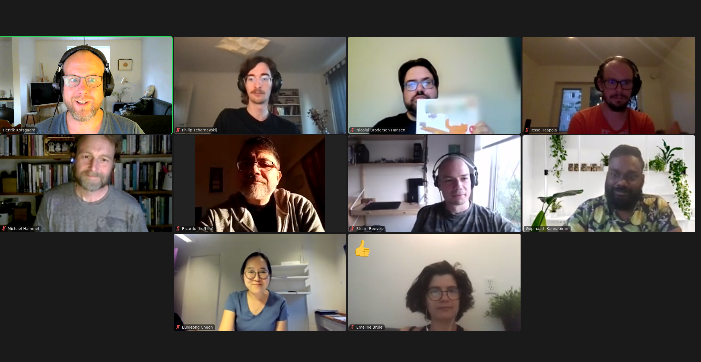

These notes are way overdue. Exams, summer, CHI etc. took its toll on me and I had to find the energy to get back into this and produce the notes. Hence, these notes are based primarily of my written notes and not on something fresh in my mind. Stuff is missing. I will update if my memory improves.
This will just be a gist of the conversation. I don't want to go too much into detail and/or report statements made by the participants. If you participated and you feel that I've missed something or this note is a misrepresentation of what happened, then reach out and we can make the appropriate edits.
Thank you all who participated -- it was a very lively and exciting conversation!
In this second iteration we tried to go with a theme for the conversation, "Intimidating Theory". This came out of a few local and twitter conversations on how it can be an intimidating exercise to grapple with, read, interpret and apply, and at times even putting the label "theory" (or even [T]heory!) on some of our conceptual work. If the theme do not stick, then we'll talk about something else. It's all an experiment.
For the introductions, we did a round where everyone contributed with a few notes on their motivation for and interest in theory. This introduction proved enough material for the entire conversations and several of the points from the introduction recurred later.
While the theme did not directly influence the discussion -- it was mentioned here and there -- we talked a bit about honesty around theory, terminology and discipline.
Several points were made related to where people have engaged theory in their work and how. From early readings in their PhD and onwards, to more surprising comments on specific contributions as "theoretical contributions" versus just doing the work. Other comments noted that e.g. some of students coursework and/or thesis work was often thin on theory, and that it can be hard to encurage students to engage more with theory in their individual work.
Someone asked what we call theory and what we call philosophies. Leading to a discussion on the problem of terminology (theory/Theory/concept etc.) and expectations and application.
We did discuss what theory is through discussing what theory is not. We talked about people's need to put order to things through theory and some of the shortcomings in that approach in isolation. Similar points was made on the problem of thinking science and theory as accumulation or liniear increamental progress in research and theory as a focal point for that.
Several points was discussed on the relevance or application of theory in practice. While Interaction Design and HCI might be entirely different from a practitioners perspective, we/they still struggle to bridge research and practice with useful theories and concepts. Someone noted that often this gap between theory and practice seem over-exaggerated. This led to points on what theory is from a practitioners perspective, e.g. heuristics and guidelines, and how theories in research could be translated to this format. We briefly discussed patterns as theory (again I think).
Here, and on the teaching point below, we talked about what theories do for different relations -- theories that bring people together (rather than obsessing over artificial gaps between "practice" and "research")
We discussed different challenges in teaching theory and different expectations from students across engineering, computer science and design educations.
Would it be possible to write children books on HCI theory? was discussed as a format for briding both the research -- student and research -- practice gap on theorey and terminology.
Related to the discussion on theory bringing people together, and some of the shared resources (see below), we talked about theory as a liberating feminist practice. It was also noted that we needed ways to make the conversation (here and elsewhere) more inclusive.
"The point of theory is to impact practice"
I know I have forgotten a few important points and gotten some wrong. Please reach out if there is something I need to add or have worded differently. Here are my personal summary of the conversations:
Thank you all who participated -- it was a very lively and exciting conversation!